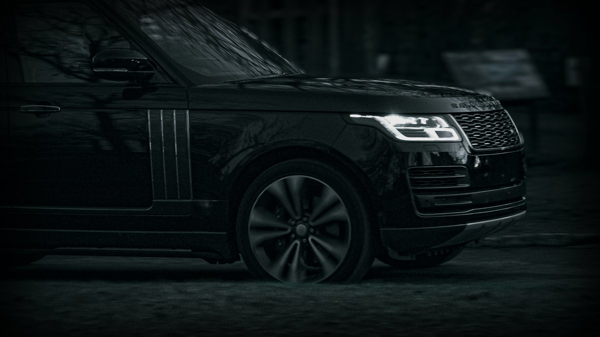
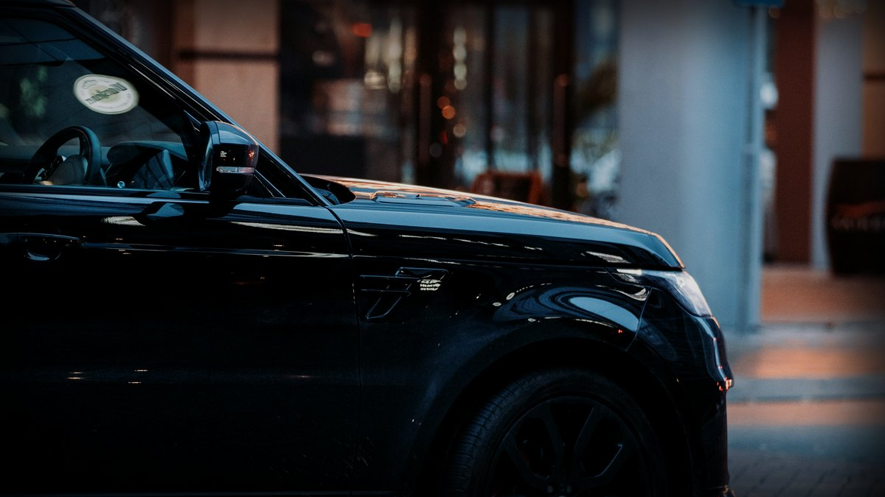
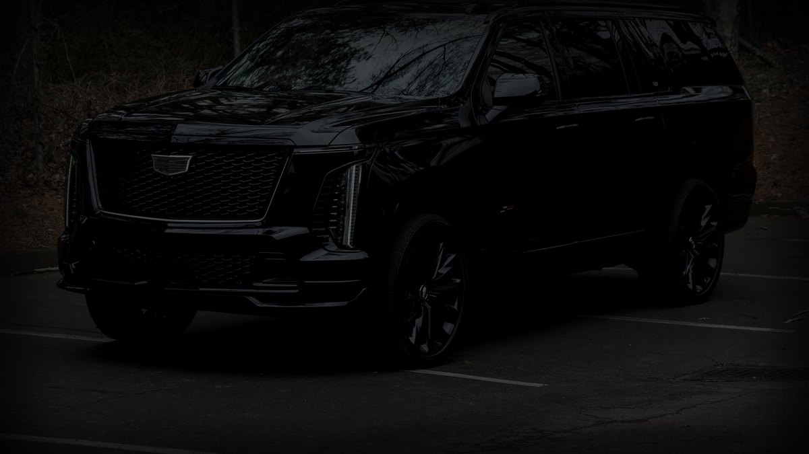
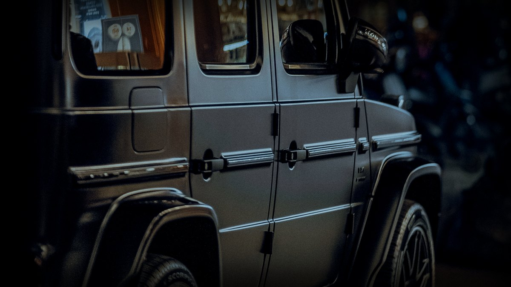
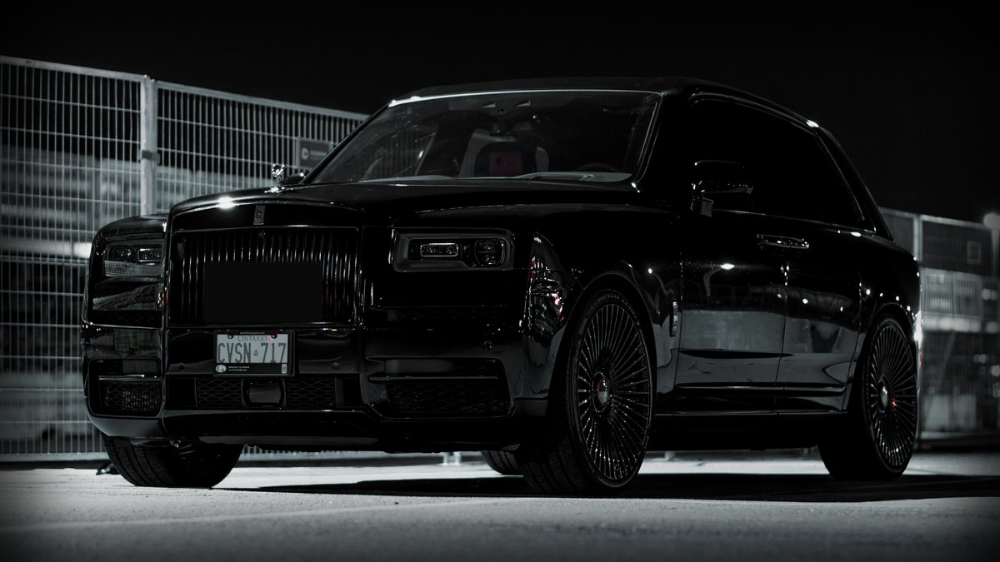
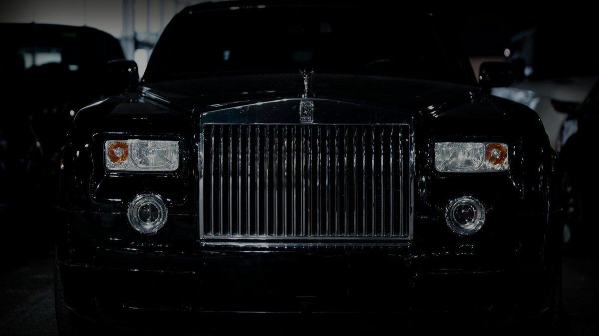
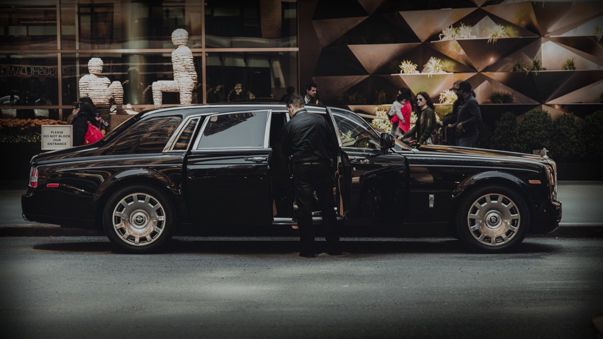
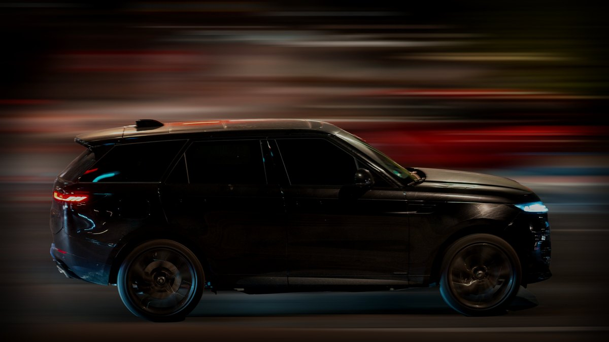

Every frame below was refetched or newly hunted at its original resolution (13–31 megapixels), then graded into the site’s near-black register with the real environment kept — no more crushed voids. Two frames are your actual fleet: A and H are Range Rovers, C is the new Escalade V. Reply with a letter.







